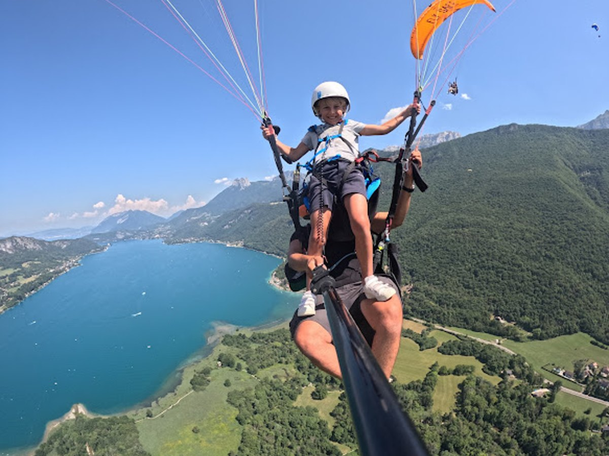
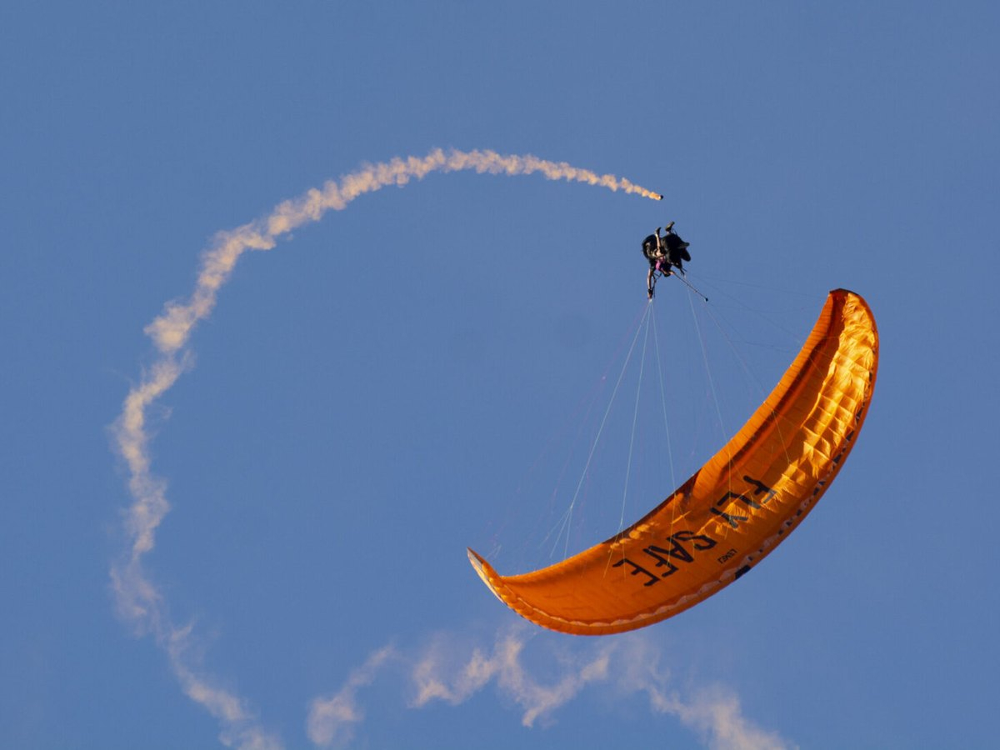
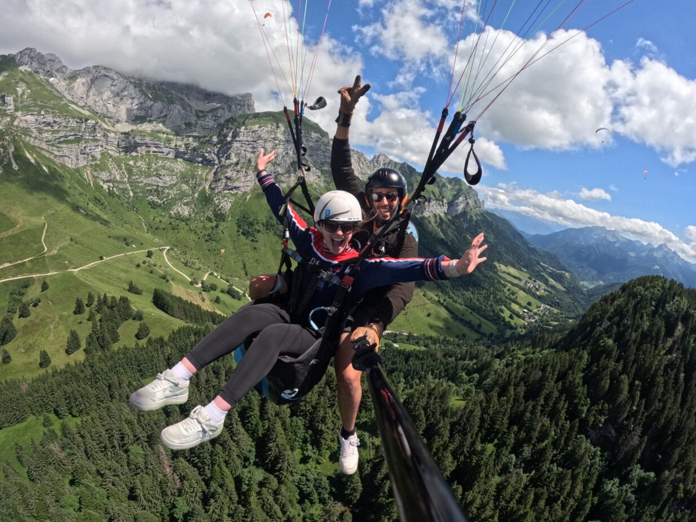

Découverte · tout public
Vol Découverte
Votre premier vol au-dessus du lac d'Annecy. Décollage au Col de la Forclaz, quelques pas pour s'envoler, puis la magie des eaux turquoise et des Alpes à 360°.
Voir les formules →Annecy · Haute-Savoie
Baptêmes en biplace et stages SIV au cœur de la Haute-Savoie. Décollage au Col de la Forclaz, atterrissage à Doussard — des moniteurs certifiés vous font découvrir les eaux turquoise du lac d'Annecy depuis les airs, en toute sécurité.
Nos expériences



Vols biplace
Tarifs 2026 · photos & vidéo HD disponibles · bons cadeaux valables un an.
100€
Le baptême idéal pour une première fois : 10-15 min au-dessus du lac d'Annecy, décollage Col de la Forclaz, atterrissage Doussard.
120€
Notre vol signature : 15-25 min d'exploration des courants dynamiques au-dessus du lac d'Annecy, avec un panorama alpin à 360°.
160€
Le vol le plus complet : 30-45 min de vol prolongé, thermiques, et la liberté de découvrir le lac d'Annecy sous tous ses angles.
En images
Ils ont volé avec nous
Une expérience magique au-dessus du lac d'Annecy ! Le moniteur était rassurant et passionné, la vue sur les eaux turquoise est absolument inoubliable. Je recommande les yeux fermés.
Premier baptême au-dessus du lac d'Annecy, un cadeau d'anniversaire parfait. Décollage tout en douceur au Col de la Forclaz, on se sent en sécurité du début à la fin. Merci !
Stage SIV exceptionnel — pédagogie claire, suivi individualisé et le lac d'Annecy comme terrain d'entraînement. On progresse vite et dans de bonnes conditions. Hâte de revenir.
Vol Premium mémorable, 40 minutes au-dessus du lac. Les courants au Col de la Forclaz sont parfaits. L'équipe connaît chaque site par cœur. Vraiment au top.
J'avais un peu peur au départ, l'équipe m'a tout de suite mise en confiance. La vue sur le lac d'Annecy depuis les airs... je ne m'y attendais pas, c'est à couper le souffle !
Accueil chaleureux à Doussard, matériel impeccable, et quelle vue sur le lac d'Annecy ! Le bon cadeau a fait un carton. Une adresse sûre pour voler en Haute-Savoie.
Une idée cadeau qui décolle
Anniversaire, Noël, un événement à fêter ? Offrez un vol découverte dans un bon cadeau valable un an. Émotions garanties au-dessus du plus beau lac des Alpes.
Réservation & contact
Une question, une date, un cadeau à offrir ? Écrivez-nous, on vous répond vite.